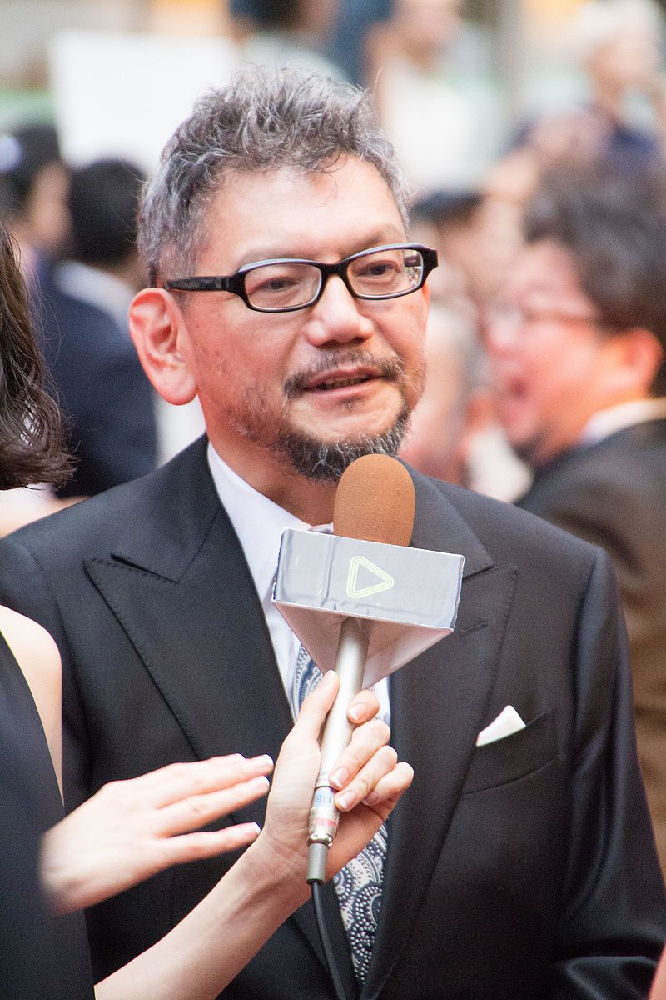

| PERSONAJES | ||||||||||
|---|---|---|---|---|---|---|---|---|---|---|
Luchan continuamente con sus relaciones interpersonales, demonios interiores y sucesos traumáticos de su pasado, creando un patrón complejo de relaciones. |
||||||||||
| PRINCIPAL |
Shinji Ikari: El protagonista principal de la serie. Es un joven de catorce años de edad, hijo de Gendō Rokubungi y Yui Ikari. Su padre le abandonó por motivos desconocidos a los cuatro años, pero una década después vuelve a reunirse con él para obligarle a pilotar la unidad Evangelion 01. |
Misato Katsuragi: Fue la única superviviente del inicio del Segundo Impacto en la Antártida. La líder estratégica de NERV, Misato es una mujer inteligente, decidida y valerosa. Tras esta personalidad se esconde un forzado proceso de madurez que la ayuda a comprender a muchos otros personajes. |
Rei Ayanami: La primera elegida, encargada de pilotar la unidad Evangelion 00 por orden de Gendō Ikari. Rei es una enigmática muchacha de catorce años de personalidad inexpresiva, hermética e introvertida, que oculta toda emoción y rara vez pronuncia palabra. |
Asuka Langley Sōryū: Piloto de la unidad Evangelion 02. De catorce años con nacionalidad estadounidense. Es definida como una chica enérgica, emocional y de temperamento opuesto a los de Shinji y Rei: en contraste con ellos, es independiente, competitiva y rebelde. |
Kaworu Nagisa: Se presenta inesperadamente como el Quinto Niño en un momento agitado y tardío de la serie. Kaworu es un joven nacido el día del Segundo Impacto y que mantiene una misteriosa conexión con los líderes de SEELE. |
|||||
LOS EVA |
Los biodroides denominados «unidades EVA», creados para la serie por Ikuto Yamashita. Su aspecto exterior es el de un gigantesco robot de combate —los típicos mechas del manga y anime—, pero detrás de esta imagen se esconden secretos que involucran el origen de los seres humanos y su relación con los ángeles. |
La Unidad Evangelion 00 es pilotada por Rei Ayanami. Esta es una unidad prototipo, por lo que sus capacidades son menores que el resto de las unidades. Su color externo es una combinación de blanco y azul. La Unidad Evangelion 01. Su piloto asignado es el joven Shinji Ikari. Su color externo es una combinación de violeta oscuro y verde. Parece poseer ciertas características ocultas de las que carecen el resto de las unidades, como la capacidad de continuar funcionando sin tener conectado su cable umbilical gracias a un modo llamado Berserk. La Unidad Evangelion 02 está asignada a la piloto Asuka Langley Sōryū, también de catorce años. Fue construida en la Tercera Rama de NERV en Alemania El color predominante en su cuerpo es el rojo. Fue la primera unidad creada exclusivamente para el combate; después de la construcción del EVA-02 no habría más prototipos. |
||||||||
ANGELES |
||||||||||
 Los planes de hacer la serie en el estudio Gainax comenzaron en julio de 1993, prolongándose la producción hasta 1996. Hideaki Anno trabajó como director, coproductor, codiseñador y coescritor de personajes con Yoshiyuki Sadamoto, así como codirector artístico con Hiroshi Kato. También participaron el subdirector Kazuya Tsurumaki, el guionista Akio Satsukawa y el diseñador artístico Ikuto Yamashita, que creó junto a Anno los diseños de los EVA, mientras que los productores fueron Noriko Kobayashi y Yutaka Sugiyama. Las animaciones fueron parte del estudio Production I.G y Studio Ghibli, así como Tokio TV y Tatsunoko. En marzo de 1992, Gainax había comenzado la planificación y la producción de una película de anime llamada Aoki Uru, que iba a ser una secuela de Royal Space Force: The Wings of Honneamise ambientada en un futuro situado 50 años después de los eventos de la primera película; al igual que la anterior, la secuela continuaría con el argumento de un grupo de pilotos de combate. Sin embargo, el presupuesto no era suficiente para el proyecto propuesto, y por ello el estudio se vio en dificultades financieras. Cuando el proyecto fue terminado en 1992 -en el mismo mes en que Neon Genesis Evangelion fue planeado-, el estudio comenzó a recortar gastos en la medida de lo posible. Hideaki Anno había sufrido una grave depresión en el período anterior a la producción de la serie, lo que influyó notablemente en el contenido de esta. Con la idea de una nueva producción, Anno recuperó la vitalidad, y a partir del tema básico de Aoki Uru, el concepto de «no huir», se desarrolló Neon Genesis Evangelion.